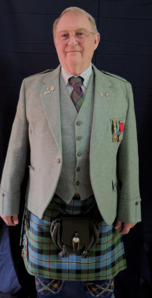

A Letter from our President
The roots of Clan MacLeod are in the Highlands and Islands of northwestern Scotland. Since the days of Leod in the 13th century, MacLeod’s and their Sept’s have grown into a worldwide clan with active societies in ten countries and potential societies in several other countries. The Clan MacLeod Society, USA and its sister societies provide a vehicle to communicate and strengthen the bonds of fellowship in our far-flung family – people of the name MacLeod (however spelled); families with names long associated with the Clan MacLeod (see our list of Septs); and MacLeod descendants under other surnames; as well as persons / friends with an interest in the rich heritage of the Clan MacLeod.
The Clan MacLeod Society, USA was founded in 1954 to establish a foundation for charitable, historical and educational pursuits for clan members in all fifty states. Currently the Society is divided into thirteen Regions each having a Regional Vice President. For more information on the Society’s activities in a region please contact the Regional Vice President in the region of interest or for information on events, magazines, newsletters, and membership contact any of the persons and Council members of the Society, whom you find on this website. All of us will be delighted to hear from you and assist as best we can.
Whatever your connection with, or interest in, Clan MacLeod, you will find somethings of interest in the activities of our Society: support of piping, dance, and other Scottish arts, genealogy resources, clan history and lore, simply meeting and socializing with some of your more distant cousins at Highland games and festivals, or clan gatherings at the local, national, or international level.
The Society conducts its charitable functions through its Dunvegan Foundation. This body supports a broad range of scholarships, grants, programs in the Scottish arts and language in the United States, and historic preservation of sites of significance to the Clan MacLeod abroad.
Both the Clan MacLeod Society and the Dunvegan Foundation are accredited as 501(c)(3) organizations by the IRS.
I invite you to learn more about our society by exploring our website, and contacting your Regional Vice President or contacting any of the members of the Society’s Council. Also, many of our Regional Vice Presidents have social media accounts which are updated to reflect activities with their respective regions. Details on joining our society are on our “join” link above or are available at the Clan MacLeod tent at most Highland games.
Hold Fast to the Light!
Franklin Wyatt III
President, Clan MacLeod Society, USA